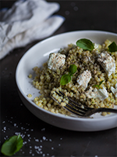

Couscous israélien, pesto d’amandes & mozzarella di bufala
Ingrédients :
- • 1/2 tasse d'amandes blanches entières
- • 1/2 tasse de feuilles de basilic frais
- • 1 petite gousse d'ail
- • 1 c. à thé de zeste de citron (au goût)
- • 1/3 de tasse d'huile olive (+ ou -)
Pour le pesto
- • 4 tasses d'eau
- • 9 oz de couscous israélien
- • 3,5 oz de mozzarella di bufala
- • Feuilles de basilic frais, pour décorer
- • Sel et poivre du moulin
Pour le couscous
Étapes
- • Dans le robot culinaire, broyer les amandes et l'ail.
- • Ajouter le basilic et le zeste de citron puis pulser jusqu'à ce que tous les ingrédients soient bien mélangés et aient une texture encore granuleuse.
- • Ajouter progressivement l'huile d'olive jusqu'à l'obtention d'un mélange homogène, mais pas complètement lisse.
- • Saler et poivrer généreusement. Réserver.
- • Dans une casserole, porter 4 tasses d'eau à ébullition puis verser le couscous israélien. Laisser mijoter pendant 10 minutes, ou jusqu'à ce que les pâtes aient absorbé tout le liquide.
- • Rincer le couscous sous l'eau froide, bien essorer puis verser dans un bol ou un saladier.
- • Ajouter le pesto d'amandes (environ 1/3 de tasse), les morceaux de mozzarella et quelques feuilles de basilic. Rectifier l'assaisonnement puis déguster.